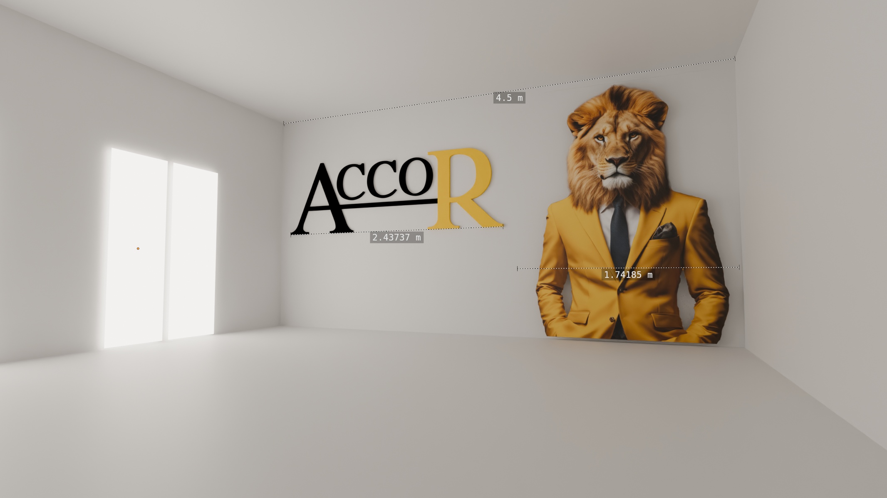

Accor: La boutique del riposo
Building a clean and effective image for an entrepreneur's new businessThe starting point
With Alessandro we talked about his current situation and explored the methodologies with which he carries out his activities, I tried to gather information on the elements he wanted to renew and asked some questions to understand how to satisfy his requests by applying the latest technologies.
From the first meeting we identified three thematic areas in which to operate:
- Brand renewal (logo redesign and coordinated image)
- Website update with new features
- Material for work activities (print templates)
And we established the priorities and times in which to carry out the activities, optimizing everything to avoid disruptions to customers and in the management of its services, especially for what concerns the website.
So, let's start.
Build the fundations
Alessandro's logo was purely typographic, although the choice was in line with the style and target of the brand, the starting solution lacked characterizing elements and capable of making the Conti brand recognizable and unique.
After some considerations and drafts, a clean solution was chosen that would not distort the recognizability but would increase its refinement:
Let's get our hands dirty
Once the fun part was established, it was time to start applying the new logo consistently on all the elements characterizing the brand.
Given the various uses of the logo (digital, screen printing, vinyl, embroidery), we avoided associating colors in the coordinated image for a more flexible use, but for a more far-sighted planning we found together the palette that best suited the personality of the service, also taking into account the character who represents it: Alessandro himself.
At this point it was possible to proceed to produce the first results, starting from some merchandise proposals up to the actual products to be delivered together with the services (certificates, website logo, newsletters,etc.)
The website
Up to this point, the website has not been altered in any way, as the main channel for reporting and interfacing with customers, with the exception of updating the logo and aligning the chosen palette.
The changes requested to the site were total, mainly due to the dated WYSIWYG writing engine that made SEO optimization difficult, furthermore it turned out to be a tool of little use to the customer and that we understood could be abandoned in favor of a more flexible and automated content management where needed and well studied upstream in the less variable points.
In this way, it was possible to drastically reduce page loading times, optimize SEO positioning and simplify the management of purchases by the customer, with a notable gain also for the ease of navigation of users.
But beyond the more technical aspects, the need emerged to adapt navigation to a new service model planned by the client. In particular, we wanted to integrate the website with two sections for sharing, purchasing and managing workshops and for a series of courses held by the client.
The final agreed site map was:
Conclusions
The project required working on multiple aspects and maintaining stylistic coherence as well as providing quality and reliable solutions to the customer.
The integration of external services (TrustPilot, Instagram, etc.) allowed not only to optimize SEO but also to build a more reliable and solid brand image.
The results can be seen in the continuous growth and healthiness of the brand, certainly thanks to the professionalism and quality of the work done by Alessandro but who will now be able to take advantage of more performing and simple tools to use with his customers.